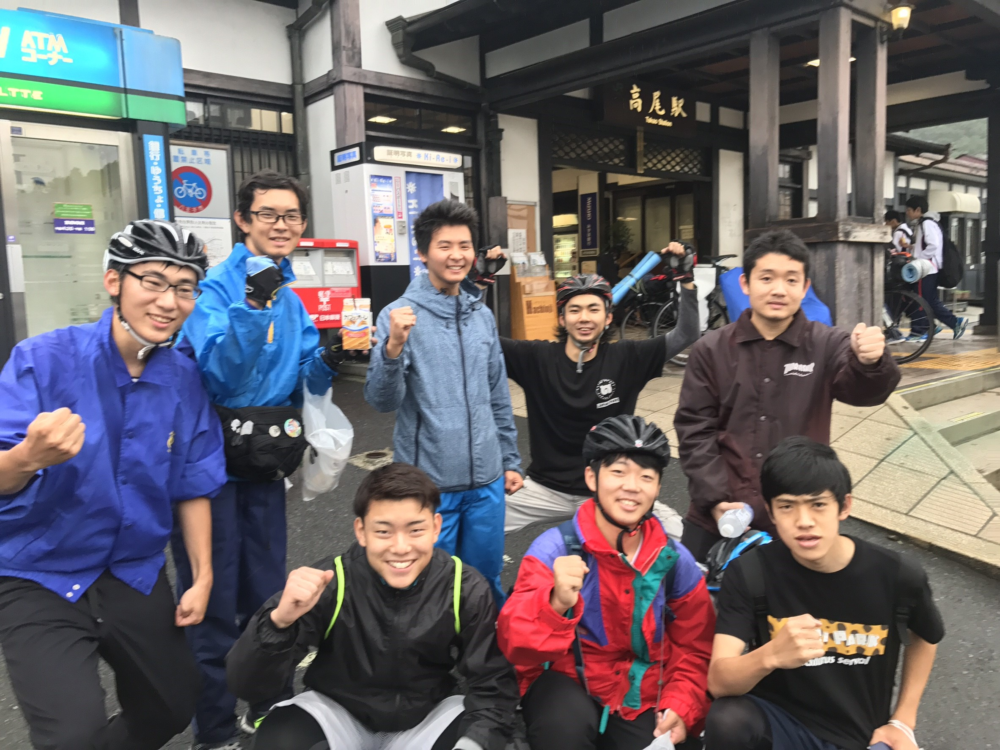
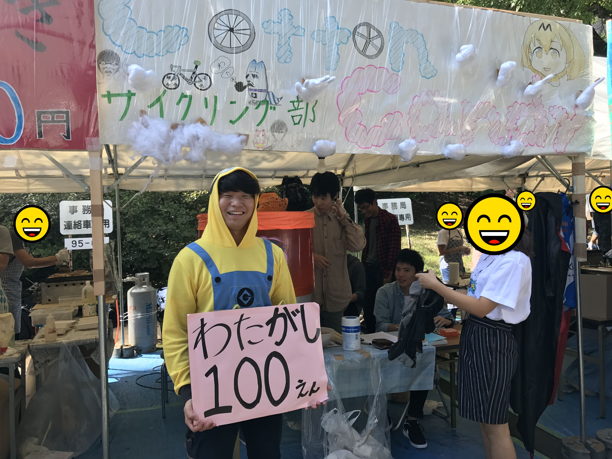
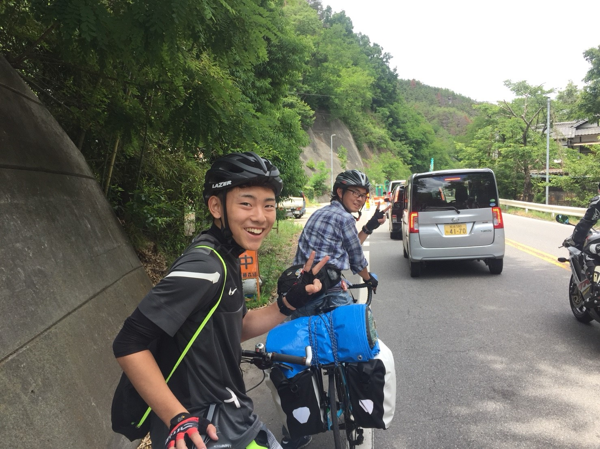

創価大学サイクリング部 合宿の軌跡
創価大学 サイクリング部の合宿の軌跡を残していくよ。
普段の活動
毎週土曜 or 日曜に、日帰りのサイクリング行っているよ！
一日で走り切れる距離の最大は、なんと 200km !!! （１度だけですが...）
八王子周辺、神奈川や埼玉県にも足を運び、色んな場所を巡っているよ！ここでは、その一部を紹介するよ！

無事故無違反で楽しいサイクリングライフを！！

創大祭では例年 わたあめ を作っているぞ！

渋滞に阻まれ、もうピースするしかないサイクリング部員